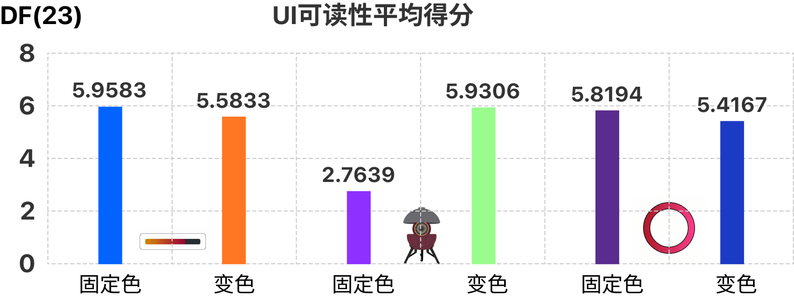

DigiStudio UGC 对话流程编排工具
复杂编辑器 / 流程设计 / 内容创作效率
 Portfolio 2026
Portfolio 2026
Ye Zehong
我主要做高复杂度产品设计，关注编辑器、流程工具、跨端体验、空间交互和研究验证。 这份版本专门用于导出 PDF，阅读逻辑按招聘场景重新排过：先看简历，再看项目目录，最后看四个项目的完整叙事。
DigiStudio UGC 对话流程编排工具
复杂编辑器 / 流程设计 / 内容创作效率
Digimi 建造系统的多端迁移与交互重构
移动端重构 / 建造系统 / 连续操作体验
全球电影数据的空间化探索原型
信息架构 / 3D 数据探索 / 可视化判断
动态背景下的 UI 变色可读性与用户体验研究
研究驱动设计 / 原型验证 / 可迁移规则
Resume
UX 设计 / 数字产品设计
偏复杂系统方向的 UX Design，具备用户洞察、数据分析、复杂工作流简化与高质量落地能力。
我有 3 年数字产品与交互设计相关经验，能从需求定义、信息架构、交互方案到验证迭代一路推进， 也能把研究、原型和协作交付真正落回产品里。
核心课程：交互系统、人机交互、信息可视化、人工智能、游戏设计与开发。
具备扎实的计算机理论基础，熟悉 C#、Python、HTML、JavaScript、CSS 等技术。
Contents
目录页不只列标题，也先给出项目画面和关键信息。正式导出时，推荐按当前顺序直接保存为 PDF， 每个项目都已经拆成完整章节，方便招聘方连续阅读。

把分支对话从零散表单改成一张能看懂、敢修改、也更好协作的大画布。

PC 建造系统上手机后，我重点解决的是看不清、够不着、也不敢连续搭建的问题。

我把电影数据从表格和图表里拉出来，做成一张可以被探索的空间关系图。

我把一个很容易停留在感觉层面的界面问题，拆成了可以验证、可以落地的设计判断。
Project 01
把复杂分支对话改成一张能看懂、能继续改的画布。
我接手后很快发现，真正卡住创作者的地方，是他们脑子里的剧情关系和工具结构对不上。 会写复杂剧情的人，脑子里先出现的是关系图，工具里却是一堆分散配置。 所以我这次改版的重点，是把这些关系收回一张画布里，让人能顺着逻辑继续写，也能回头快速找到刚配过的内容。
用户脑子里是分支图，工具里却只有线性表单。
我先把剧情关系、文本和条件放回同一张画布上。
该拦的错误当场拦住，该露出的信息直接露出来。
我用同一任务对比新旧流程，看这次改动是否真的有效。
先看清是谁卡住、卡在哪。 我关注的是更复杂的创作者：他们要处理任务、好感度、条件判断和复合触发，脑子里天然是一张分支图。旧系统把这些内容拆在不同组件和面板里，关系一断，效率就会掉下去。
为什么要改成画布： 我参考了 UE 蓝图、Roblox Studio 这类成熟编辑器后，确认了一个方向：复杂逻辑要先把关系摆出来，再在关系上做配置。

Project 01 / Journey & Phase 01
我把“做一个带好感度分支的任务”拆开后发现，构思阶段其实很顺；真正开始掉速，是想法落进工具之后。
创作者先在脑中搭好 NPC 任务、分支和结果走向。
剧情网状交错，其实非常清晰。这一步，问题还没有出现。
创作者开始规划先后顺序、条件判断和任务路径。
先从 NPC 问好开始，再判定好感度。工具开始跟不上脑中的分支图。
创作者要在不同组件和文本面板之间来回点击、添加、补条件。
等等，文本在哪？条件配置又在哪？一边配一边丢线索，越配越乱。
创作者回头测试时，已经很难追溯刚才那段逻辑到底藏在哪。
我完全找不到刚才配的那段逻辑在哪里。一旦回头修改，就像重新找一遍路。
我先做了一个核心判断：关系看不见，表单再精致，用户还是会迷路。于是我先做了一张能表达分支关系的对话图，把文本、条件和功能都挂回节点上。结构成立以后，我再补两种创建方式：一条保证高频操作够顺，一条照顾先搭骨架的用户。
优先照顾高频路径。从输出口直接拉线，松手就能在空白处创建下一个节点，适合连续写剧情时一路往下接。
给规划型用户保留的路径。从右下角拖出节点，先把主要分支摆好，再慢慢连线和补内容，适合先搭结构再填细节。


Project 01 / Phase 02 & Result
系统该帮到什么程度、哪些错误要前置拦截、信息一多之后还能不能快速扫清，都会直接影响创作者敢不敢继续用。
这里我专门做过取舍。当中间节点被删除时，系统到底要不要自动把前后逻辑重新接上？我最后放弃了“自动重连”。在复杂分支里，创作者更在意可控，自己重连的成本，通常小于系统错连一次带来的风险。
我把这条防线放在编辑阶段。当用户尝试拉线形成 A → B → A 的剧情闭环时，系统会实时检测并直接拦截，连线失败回弹，同时给出明确提示，避免把逻辑漏洞留到测试阶段才暴露。
条件标签和功能图标直接放到节点外层，又加了可收起的对话组抽屉，并规定线永远压在节点下面。这样分支再多，创作者也能快速扫一眼，看清哪里有条件、哪里能展开、哪条线在连什么。
测试基准： 为了避免只靠主观感受，我找了 4 名内部 UGC 创作者，用新旧两套系统分别完成同一个中大型剧情任务：3 个好感度分支，4 个复合功能触发。我重点记录找节点、配置内容和整体完成时间，看这次改版有没有把人从反复找配置里解放出来。
好的专业工具，要把信息摆清楚，把风险拦在前面。
复杂编辑器先要让用户知道自己在哪、刚刚改了什么、接下来会影响哪里。
这次 Digistudio 重构最能说明我的，是我会先把复杂关系理顺，再把它做成用户敢用、愿意继续扩写的编辑体验。
定位节点
< 1s
想找哪段逻辑，几乎立刻就能看到。关系摆在画布上后，不用再在场景和多个面板之间来回翻入口。
配置耗时
60m → 15m
过去是拆成多个组件分头配置，现在是在一张画布上连续完成。
整体效率
+80%
更大的变化在于，大家更愿意继续扩写和返工，因为改动成本终于降下来了。


Project 02
PC 建造界面缩进手机屏幕后，真正的问题不是功能少了，而是视野、操作和节奏全都挤在一起了。
建造系统一旦进入移动端，屏幕空间急剧缩小。PC 端那套常驻面板如果原样搬过去， 玩家会一边找功能，一边被界面挡住视野，很难连续搭建。
Project 02 / Solution & Validation
这一页重点看两轮设计：拖拽时界面主动让路，以及方块选择的分层重排。
当玩家进入建造、旋转和拖拽状态时，我让部分界面暂时后退，把更多空间还给视野，同时保留撤回等兜底操作。
底部快捷栏承接最高频方块，最近 / 收藏 / 最多使用负责中频切换，完整仓库退到补充层，保证主流程不断线。
Task Steps
-67%
完成核心建造任务所需步骤显著减少，玩家更少被界面打断。
Visual Search
-70%
找方块、找入口、找撤销的成本下降后，玩家开始更愿意连续搭建。
这个项目最能体现我把复杂系统迁移到新设备时，不会只盯着布局缩放，而是会重看使用节奏、视野关系和高低频操作分层。


Project 03
我把电影数据从传统筛选页里拉出来，做成一张更适合探索关系、寻找入口的空间化原型。
访谈后我先确认了三件事：用户想先看电影从哪里来、又流向哪里；国家和类型之间更像方向关系；时间更适合被切成阶段慢慢比较。 所以我把 3D 定义成空间探索入口，而不是拿它去替代所有 2D 趋势图。
Project 03 / Workflow & Outcome
我先做低保真骨架，再决定视觉和交互细节，确保主视图、筛选路径和局部反馈都服务于探索主线。
在视觉之前，我先验证三件事：主视图能不能成为入口，筛选是否顺手，细节反馈会不会打断主线。
我把局部反馈压成四种轻状态，让用户能追问细节，但不至于一下掉进信息深坑。
我会继续完善时间切换、类型筛选和局部详情的联动，把这套原型从“探索判断”进一步推进到“真实使用”。


Project 04
我把一个说不清的界面问题，拆成了可以验证的设计判断，再把结论收成工作里真正能用的规则。
我把讨论收束成两个边界：变色能不能帮忙，以及它会在什么时候开始打扰人。这样最后产出的就不会只是一张好看的效果图，而是一套可以指导判断的规则。
这个问题在真实产品里很常见，很多团队却只能凭经验拍板。我用 Unity 搭的是高动态测试环境，但目标一直指向现实产品，例如车载 HUD 在强光变化下的防撞色规范，以及运动手表在剧烈颠簸中的瞬时看清率标准。
Project 04 / Method & Rule
这个项目最能体现我的地方，不只是研究本身，而是我能把模糊问题一步步变成可执行判断。
我先看了 160 个高动态界面案例，通过亲和图分析和维度拆解，把它们收束成三种可比较对象：条形状态条、整体渲染、环形 HUD。
我自己在 Unity 里搭测试系统，让 24 位用户在真实干扰下完成识别任务，再结合问卷、访谈和统计分析交叉看结果。
对比度够高时，信息更容易被看到；但变得太快，用户会累，也会犹豫，尤其当它碰到了既有心智时。
先看用户心智。像血条这类已经形成强记忆的界面，颜色变化本身就可能引入新的理解负担。
限制变色频率。加入 300ms 动态缓冲窗，别让 UI 跟着背景每一小次波动都闪一下。
只在关键阈值提醒。平时保持安静，跨过重要横杆时再触发颜色变化，避免用户一直被打扰。
很多界面问题的卡点，并不在于做不出来，而是团队一开始连真正的问题是什么都没对齐。这个项目最能说明我会先定义问题，再搭方法、做原型、看证据，最后把结果翻译成工作里能直接用的设计规则。



End
如果需要，我可以继续把这个导出页再往前推进一步： 一是补上更强的封面与目录视觉，二是把每一页进一步压到适合正式投递的打印密度。
邮箱：alan-vzh@foxmail.com
Ye Zehong Portfolio